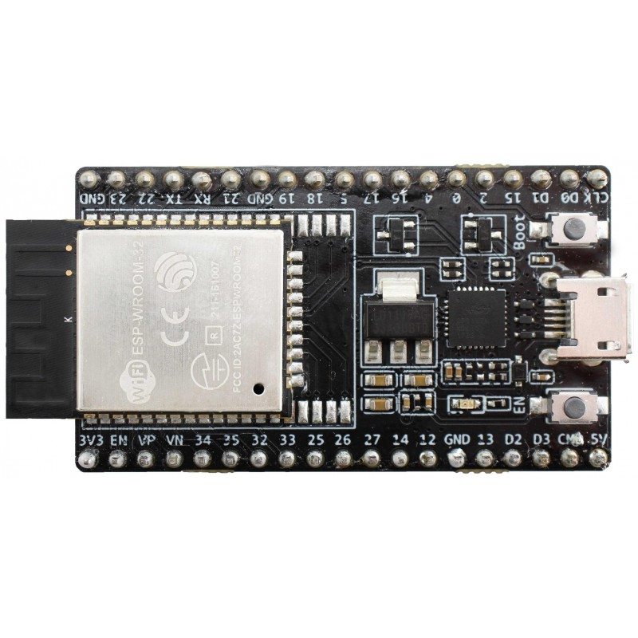
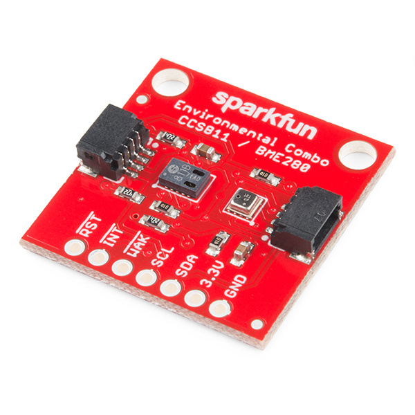
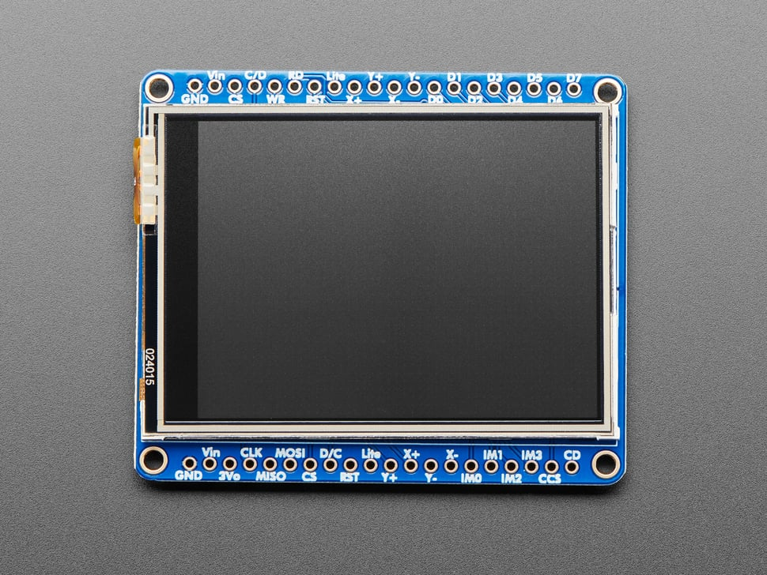
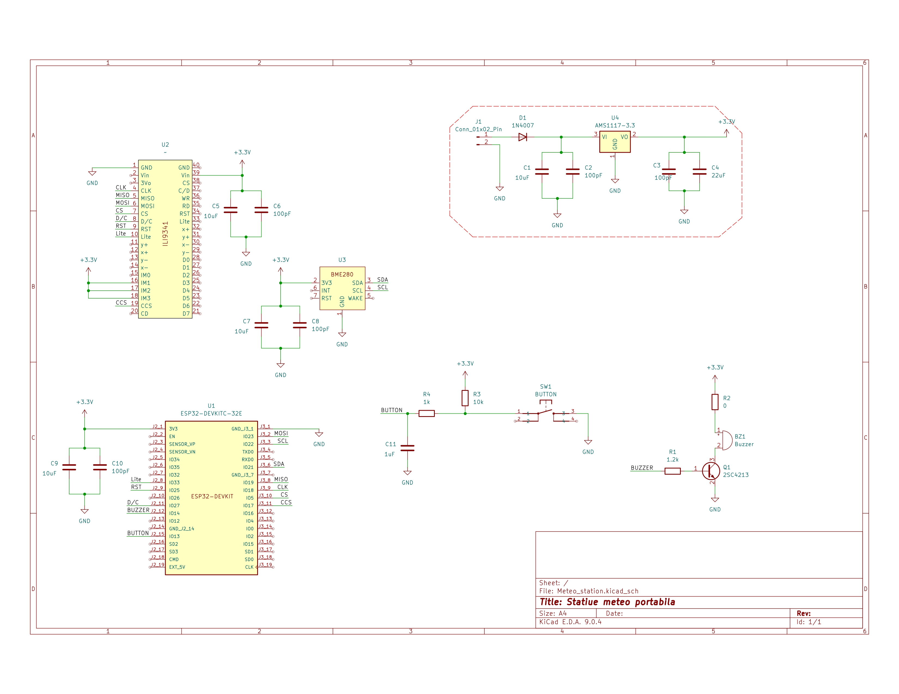
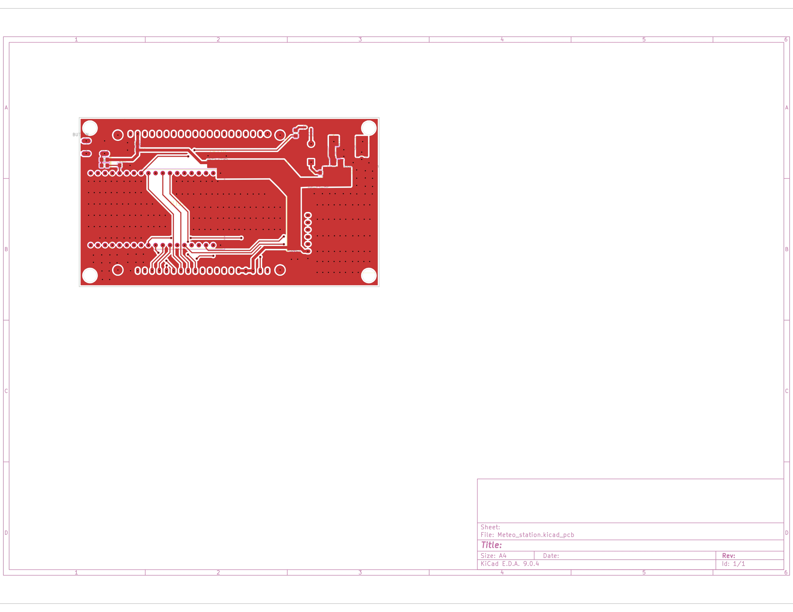
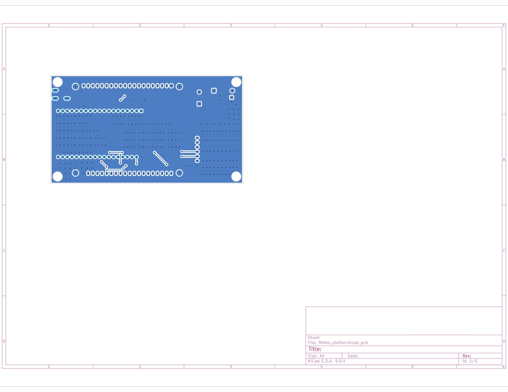
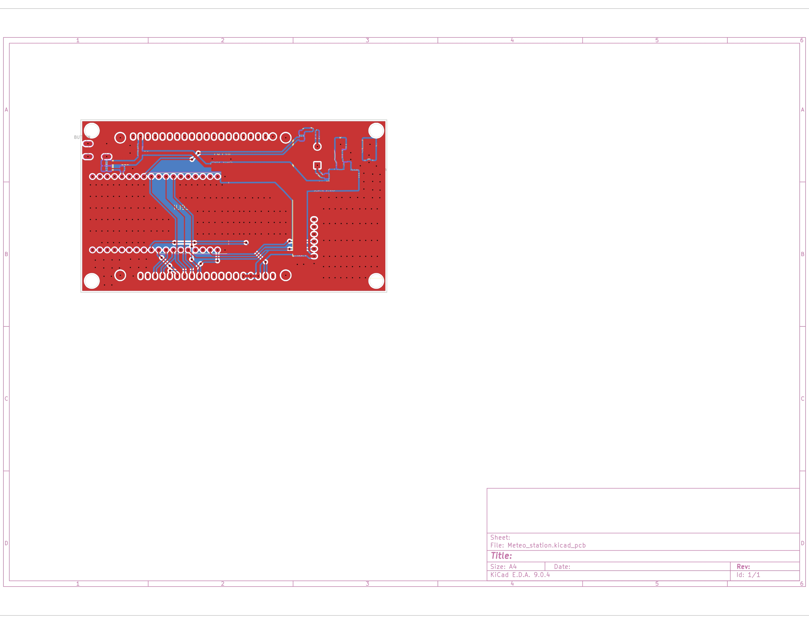
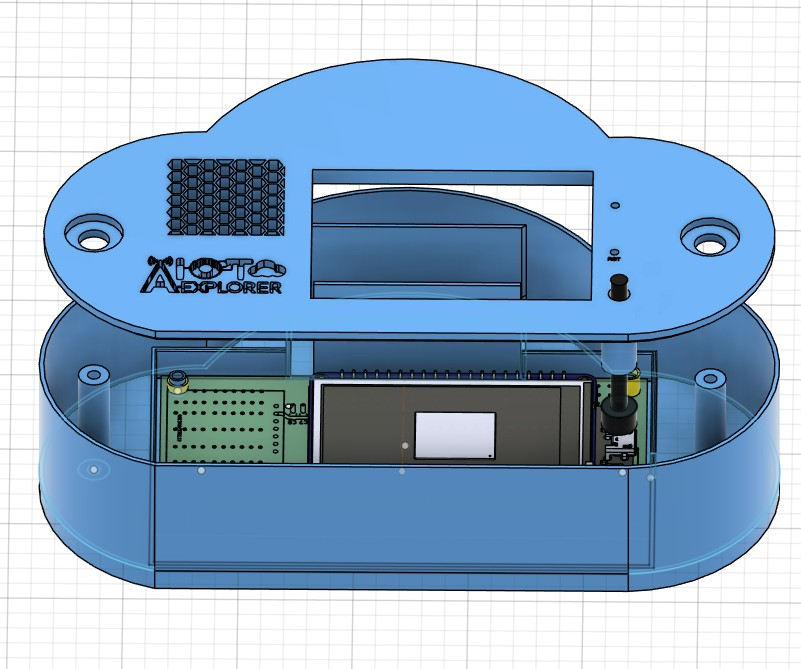

Image Preview
1. Introduction & Project Overview
AtmoPredict IoT is an environmental monitoring station designed to predict local weather patterns by analyzing real-time atmospheric data. Unlike standard weather apps that rely on regional forecasts, this device provides local insights based on the precise evolution of barometric pressure and humidity at the user's exact location.
The core objective is to detect early signs of "bad weather" (storms, heavy rain, or sudden pressure drops) before they occur, using localized trend analysis.
2. System Architecture
AtmoPredict is built on a multi-layer architecture that integrates hardware sensing, local processing, and cloud-based data visualization. The system follows a Sensor-to-Cloud topology.
Architectural Overview
The workflow of the system is divided into four main stages:
- Data Acquisition: Sensors measure environmental variables (Pressure, Humidity and Temperature).
- Edge Processing: The ESP32 processes raw signals, applies calibration offsets, and calculates weather trends.
- Local Feedback: Immediate data visualization via the integrated physical display.
- Cloud Integration: Data transmission via HTTP to the web server for long-term storage and analysis.
Hardware Layer
- The Brain: ESP32-WROOM-32 module
- Chosen for its dual-core processing capabilities and integrated WiFi/Bluetooth stack.

- Primary Sensor: SparkFun BME280 (Atmospheric Sensor)
- This sensor measures Barometric Pressure, Humidity, and Temperature.

- Visual Interface: Adafruit 2.4" TFT LCD (ILI9341)
- A vibrant display used for real-time telemetry.
- Resolution: 240 x 320 pixels.
- SPI Interface: High-speed communication for smooth UI updates.
- Integrated Features: Includes a touchscreen for navigation and a MicroSD socket for local data logging in case of WiFi outages.

Communication & Data Flow
The efficiency of the AtmoPredict relies on a structured data pipeline. The system architecture ensures that environmental readings are not only displayed locally on the Adafruit TFT screen but also synchronized with a remote server.
Data Transmission Pipeline:
- Acquisition & Processing: The ESP32 acts as the central processing hub, interfacing with the BME280 to collect atmospheric data. The primary objective of this stage is to analyze fluctuations in barometric pressure and humidity.
- Telemetry Ingestion: Processed data is encapsulated into a JSON payload and published to a specific MQTT topic over a secure Wi-Fi link.
- Broker Routing: The Mosquitto Broker receives the message and dispatches it to the backend ingestor through the Caddy Reverse Proxy.
- Data Persistence: The backend service validates the incoming signal and stores the timestamped values into a Timescale database.
- Dashboard Delivery: The frontend fetches the persisted data via HTTPS REST API calls to update real-time charts and the user interface.
Web & Visualization Layer
The frontend represents the interface between complex atmospheric data and actionable user insights. It is designed as a responsive web dashboard that fetches and renders telemetry in real-time.
3. Hardware și Design (PCB & 3D)
The hardware design of the IoT project consists of a custom-designed Printed Circuit Board (PCB) and a dedicated 3D enclosure. The PCB was developed using KiCad and integrates all essential subsystems, including the microcontroller unit, communication module, power management circuitry, and sensor/actuator interfaces.
Schematic Design
The schematic was created to clearly define all electrical connections and functional blocks of the system.

PCB Layout Design
The PCB layout was designed to optimize:
- Compact board dimensions
- Efficient component placement
- Short and clean routing paths
- Proper grounding strategy (ground planes)



3D Enclosure Design
A custom 3D enclosure was designed to match the PCB geometry and mounting requirements. The enclosure provides:
- Mechanical protection
- Secure PCB mounting points
- Access to connectors and user interfaces

4. Software & Logic
The software and logic layer is currently under active development. We are refining the firmware behavior, backend processing flow, and dashboard integration to deliver a stable, intelligent experience. A full technical overview will be published here very soon.